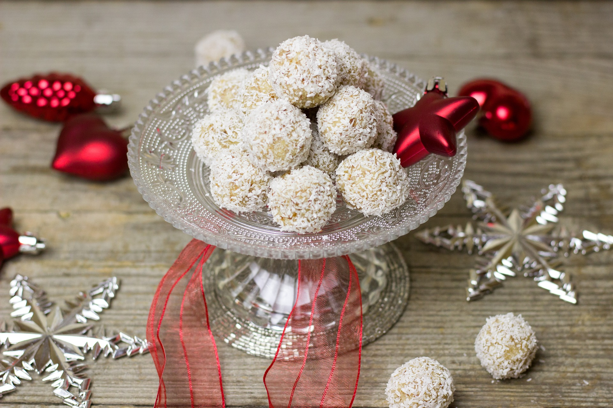

Recipes
GINGERBREAD
INGREDIENTS
- 125g unsalted butter, softened
- 1/2 firmly packed cup brown sugar
- 1/2 cup golden syrup
- 1 egg yolk
- 2 1/2 cups plain flour
- 1 tablespoon ground ginger
- 1 teaspoon mixed spice
- 1 teaspoon bicarbonate of soda
- 1 cup icing sugar, sifted